My Background

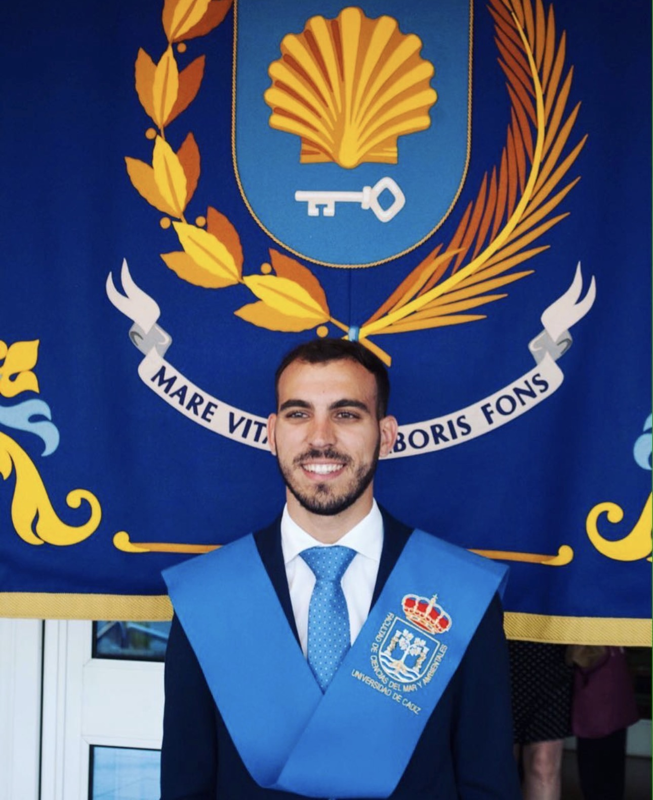
BSc & MSc
+Prior to joining ICMAN-CSIC, I completed a Bachelor's degree in Marine Sciences and a Master's degree in Oceanography at the University of Cádiz (UCA, Spain). In 2017, during the third year of my Bachelor's programme, I began collaborating on scientific research with Dr. Laura del Río in the Department of Earth Sciences. I later received a Collaboration Scholarship to carry out my Master's thesis under the supervision of Professor Dr. Luis Barbero, using drone technology equipped with thermal sensors to detect submarine groundwater discharges in coastal areas.
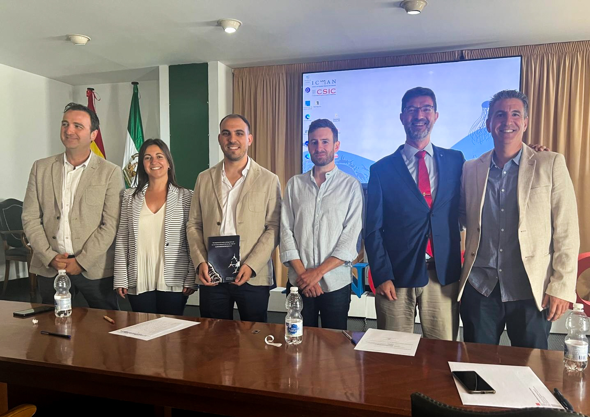
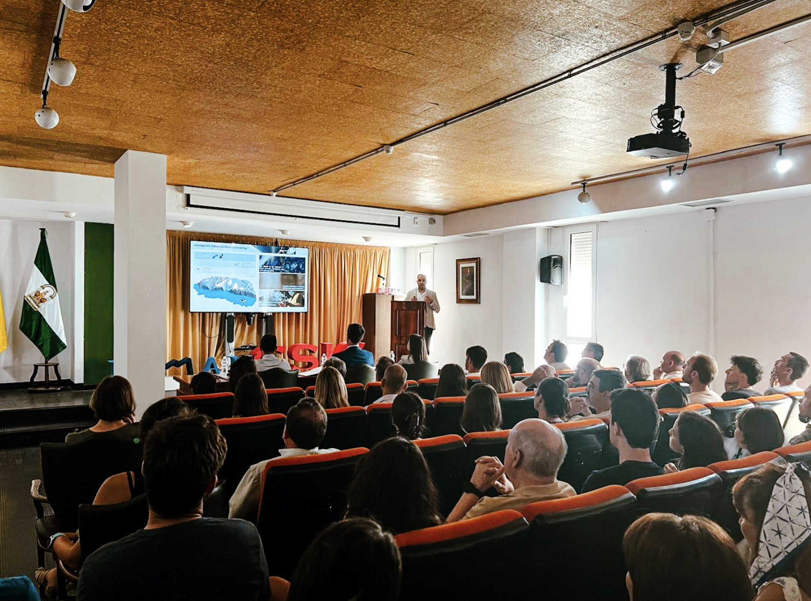
PhD Research
+In 2020, I began my scientific career at the Institute of Marine Sciences of Andalusia (ICMAN-CSIC, Spain), pursuing a PhD focused on developing remote sensing tools and using sensors onboard drones to study coastal environmental processes. Funded by the PhD Fellowship for University Staff Training (FPU, ref: FPU19/04557), I worked under Dr. Antonio Tovar-Sánchez and Dr. Gabriel Navarro. I specialised in characterising diverse marine ecosystems and coastal processes, including seagrass meadows, penguin colonies, and algal blooms. During this period, I participated in six research projects, including two polar projects (PiMetAn and DICHOSO), and published 17 peer-reviewed articles, ten as first author, in leading journals. I completed my PhD in July 2024 with the highest honours, summa cum laude.
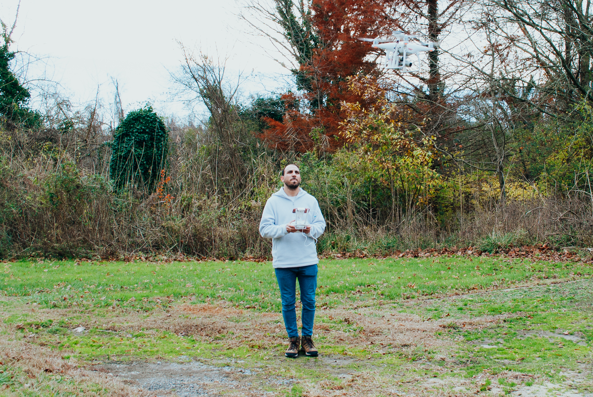
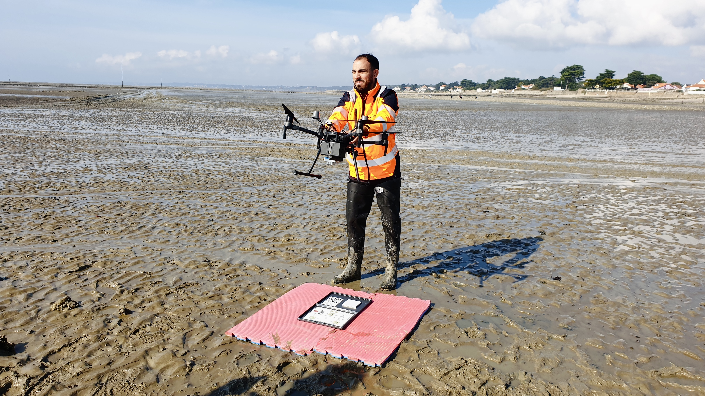
Research Stays
+I expanded my training through three international research stays. From February to June 2022, I worked at the University of Malta under Dr. Adam Gauci, enhancing my Python programming skills for drone operations over aquatic surfaces. From October to November 2022, I collaborated with Dr. Laurent Barillé at the University of Nantes on multispectral monitoring of oyster farming areas and microphytobenthos in estuarine systems. Finally, from September 2023 to February 2024, I developed Python-based techniques for marine optics algorithms at the University of Maryland, funded by a Fulbright scholarship and supervised by Dr. Greg Silsbe.
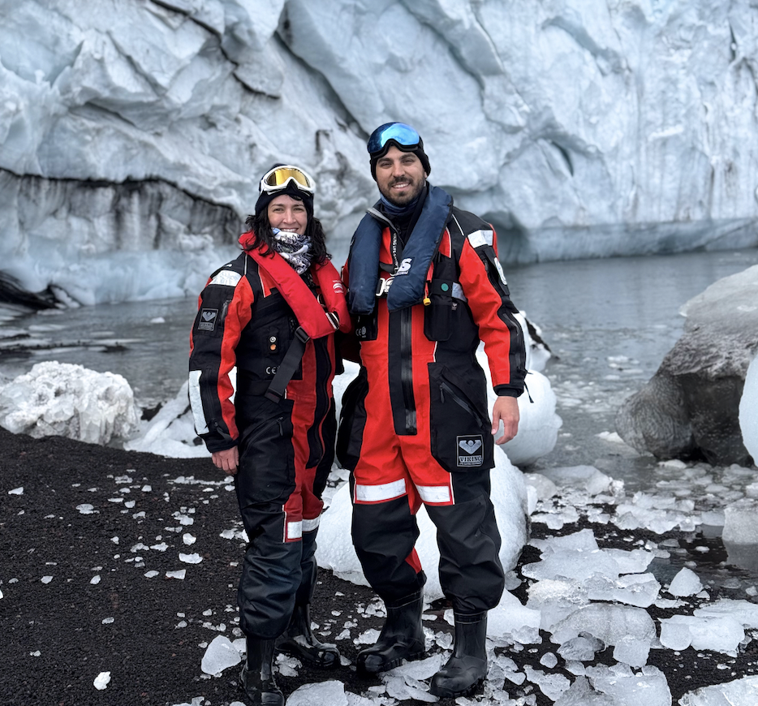
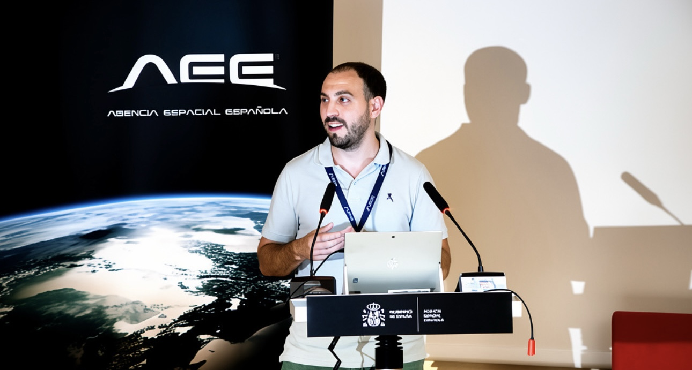
Postdoctoral
+Upon completing my PhD, I began my postdoctoral stage as a contract researcher under the Momentum CSIC program, working on the DIGIDRON project (Development of emerging digitalization and data processing technologies for studying coastal environmental phenomena using drone-mounted sensors). My current work focuses on integrating artificial intelligence with drone-collected data, supported by specialised training in machine learning and deep learning applied to remote sensing and geosciences.
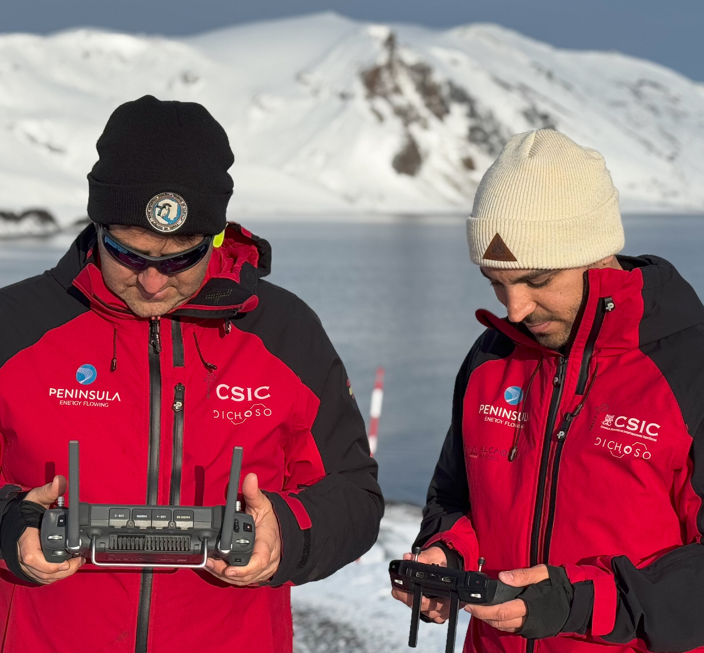
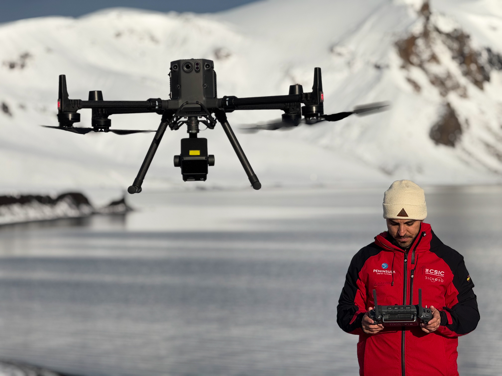
Antarctic Campaigns
+At the beginning of 2025, I had the privilege of participating in my first Antarctic campaign through the DICHOSO project. I embarked on the research vessel BIO Hespérides, crossing the Drake Passage from Ushuaia (Argentina) to the Spanish Antarctic Base Gabriel de Castilla on Deception Island. There, we assessed the role of volcanic activity and chinstrap penguin colonies in greenhouse gas emissions. We then conducted an oceanographic campaign aboard the B/O Sarmiento de Gamboa between Deception and Livingston Islands. In early 2026, I returned to Antarctica for the first campaign of the POLAROMICS project, revisiting both islands over the course of a month.
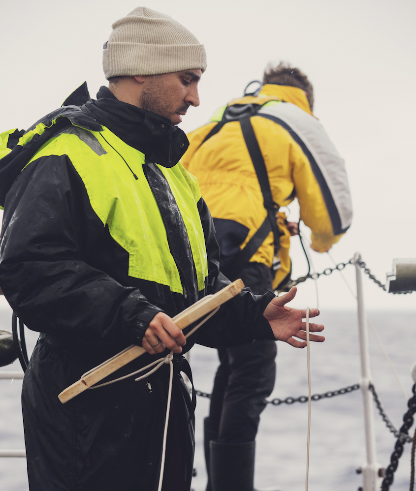
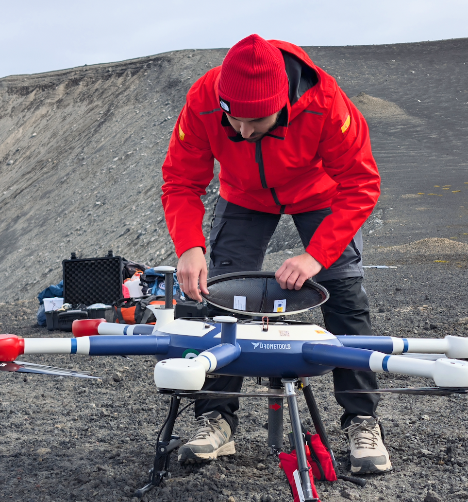
2025 & Beyond
+Throughout 2025, my scientific career accelerated significantly. I participated in events such as the ELLIS Summer School, FICE2025, and NASA PACE HACKWEEK, and took part in the ESA OTC25 campaign aboard the tall ship Staatsraad Lehmkuhl as part of the One Ocean Expedition. I joined the coordinating committee of the POLARCSIC Hub and became a Core Member of an Antarctica Insync working group. At the end of 2025, I spent a month at the University of Eastern Finland with Dr. Miguel Villoslada, advancing AI-derived algorithms for upscaling from drone to satellite remote sensing. I was also awarded my first international project as PI, the AMIGA project, and launched the ABANTI project through the JAE Intro ICU POLARCSIC programme.
Map of My Research Activity
Skills
Big Data & Artificial Intelligence
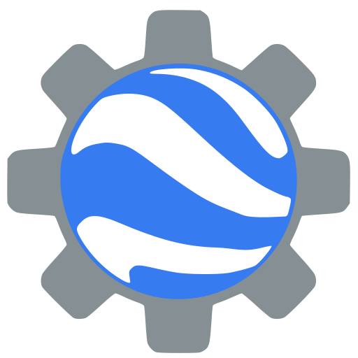
Google Earth Engine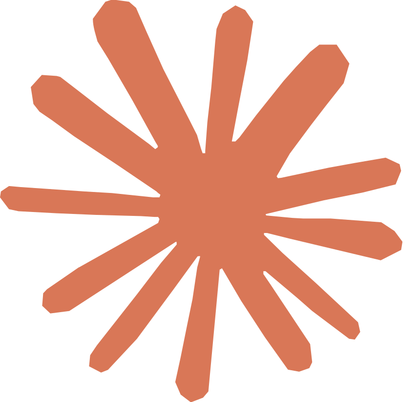
Claude AI- 2026 · Design Your Personal Learning Environment for Research Success
- 2026 · Intensive Technical Program in Data Science (DATAMECUM)
- 2026 · Machine Learning for Earth Systems Modelling (ECMWF)
- 2026 · Bootcamp in Data Analytics & IA (Upgrade Hub)
- 2025 · ML for Scientific Research: Classification & Regression Trees (MNCN)
- 2025 · CS50's Introduction to AI with Python (Harvard)
- 2025 · AI Applied to the Environment (DATAMECUM / UCA)
- 2025 · Google AI Essentials (Google)
- 2023 · MOOC Machine Learning in Weather & Climate (ECMWF)
- 2023 · Introduction to Python Programming (CSIC)
- 2022 · Python 3 from A to Z (Frogames)
Remote Sensing
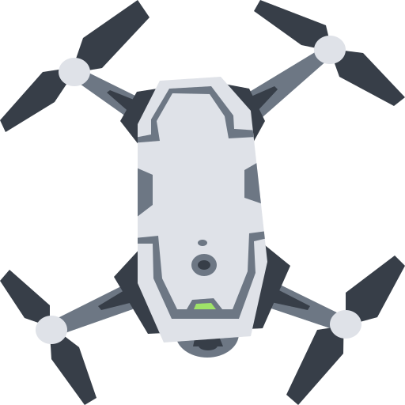
Drone Operations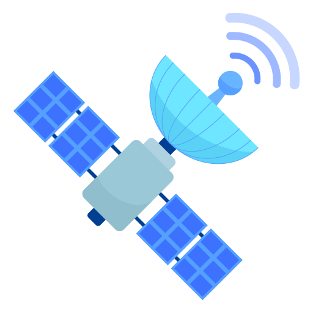
Satellite Imagery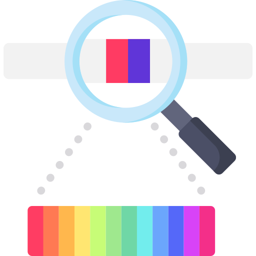
Spectroradiometry- 2025 · Drone Training STS-01 & STS-02 (Formadron)
- 2025 · NASA PACE DATA HACKWEEK (Baltimore, US)
- 2025 · Copernicus FRM4SOC Radiometry Training (Venice)
- 2025 · ESA Advanced Ocean Training Course OTC25 (8 ECTS)
- 2024 · NASA ARSET: PACE Hyperspectral Observations
- 2023 · Part 107 UAS Airman Certificate (FAA, US)
- 2023 · Pix4Dmapper Essentials Workshop (Pix4D)
- 2023 · CONDOR Hexacopter Certification (DroneTools)
- 2022 · Inter-comparison & Calibration Workshop (PTI TELEDETECT)
- 2021 · Remote Sensing as a Global Tool (UIMP)
- 2021 · Hyperspectral Data for Land & Coastal Systems (NASA)
- 2021 · Basic GIS and Remote Sensing (UCA)
- 2020 · Remote Drone Pilot Certificate A1/A3, A2, STS (EASA)
Field Experience
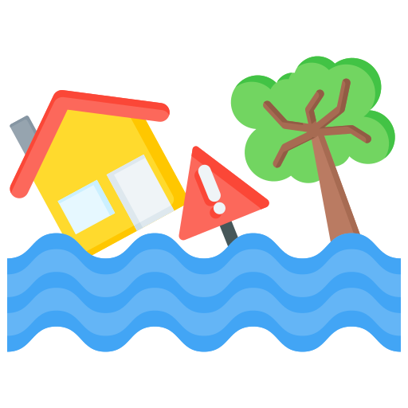
Flash Floods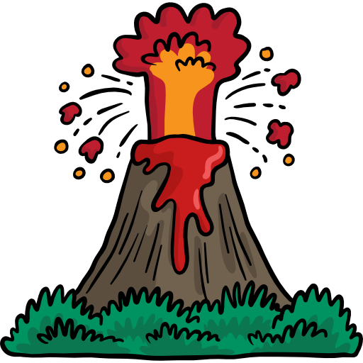
Volcanic Eruptions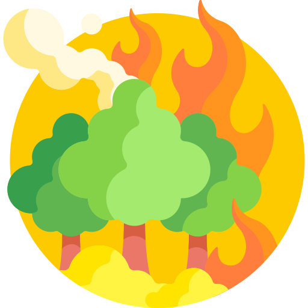
Wildfires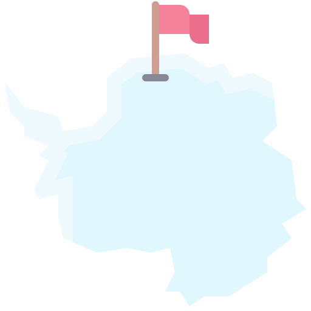
Antarctica- 2026 · Madrid Wildfires Emergency Assessment
- 2026 · POLAROMICS Antarctic Campaign (BAE Gabriel de Castilla & BAE Juan Carlos I)
- 2025 · Las Médulas Wildfires Post-event Assessment (León)
- 2025 · ESA OTC25 aboard Statsraad Lehmkuhl (Arctic–Atlantic–Mediterranean)
- 2025 · DICHOSO Antarctic Campaign (BIO Hespérides & B/O Sarmiento de Gamboa)
- 2025 · Advanced Civil Protection Course
- 2024 · Valencia DANA Post-event Emergency Assessment (Nov & Dec)
- 2022 · GEOTRACES Summer School (R/V Heincke, AWI)
- 2021 · La Palma Volcanic Eruption (R/V Ángeles Alvariño)